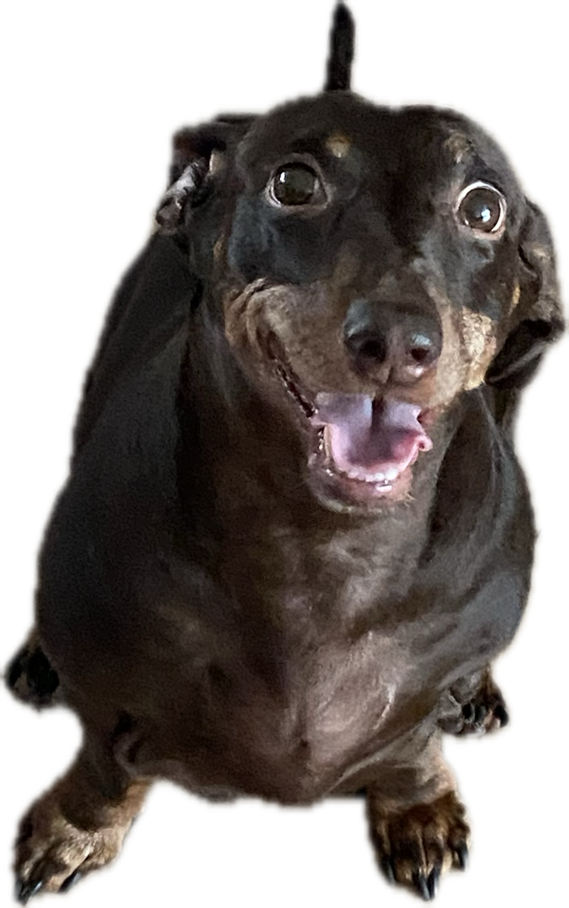

부위를 눌러 보세요
귀, 코, 발, 꼬리까지 똘똘이의 구석구석을 알려 드릴게요.
마우스로 끌면 똘똘이가 빙글 돌아요. 동그란 점이나 아래 버튼을 누르면 그 부위를 자세히 볼 수 있어요.

3D 모델을 준비하고 있어요. 지금은 사진으로 구경해요!
↔ 끌어서 돌려보세요
귀, 코, 발, 꼬리까지 똘똘이의 구석구석을 알려 드릴게요.
점 위치 잡기: 위 부위 버튼을 고르고 → 3D 모델에서 원하는 곳을 누르세요. 아래 글을 복사해서 알려 주세요.
사진 자리에 똘똘이 사진을 넣을 거예요. (지금은 이모지가 대신 들어 있어요)
산책 (특히 한강!)
간식 봉지 소리
가족 무릎 위
햇볕 드는 자리
목욕
병원 가는 날
혼자 남겨지기
청소기 소리
표정만 봐도 똘똘이 마음이 보여요. 감정을 눌러 보세요! (사진 자리에는 똘똘이 표정 사진을 넣을 거예요)
마스터한 기술, 연마 중인 기술, 까먹은 기술까지 전부 모았어요. 단, 모든 스킬은 간식이 눈앞에 있을 때만 성공해요. 간식이 없으면 “응? 뭐라고? 못 들었는데?” 모드로 돌입합니다.